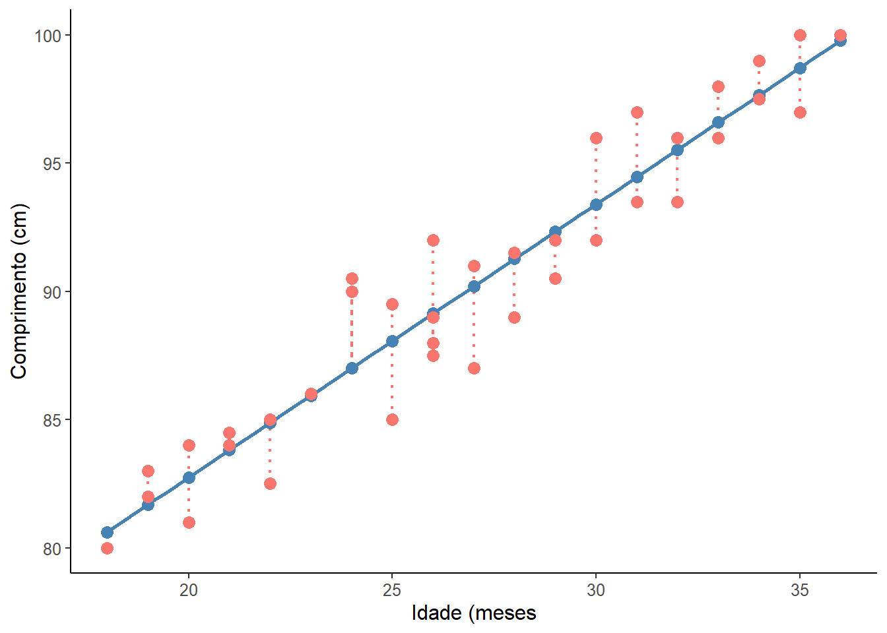
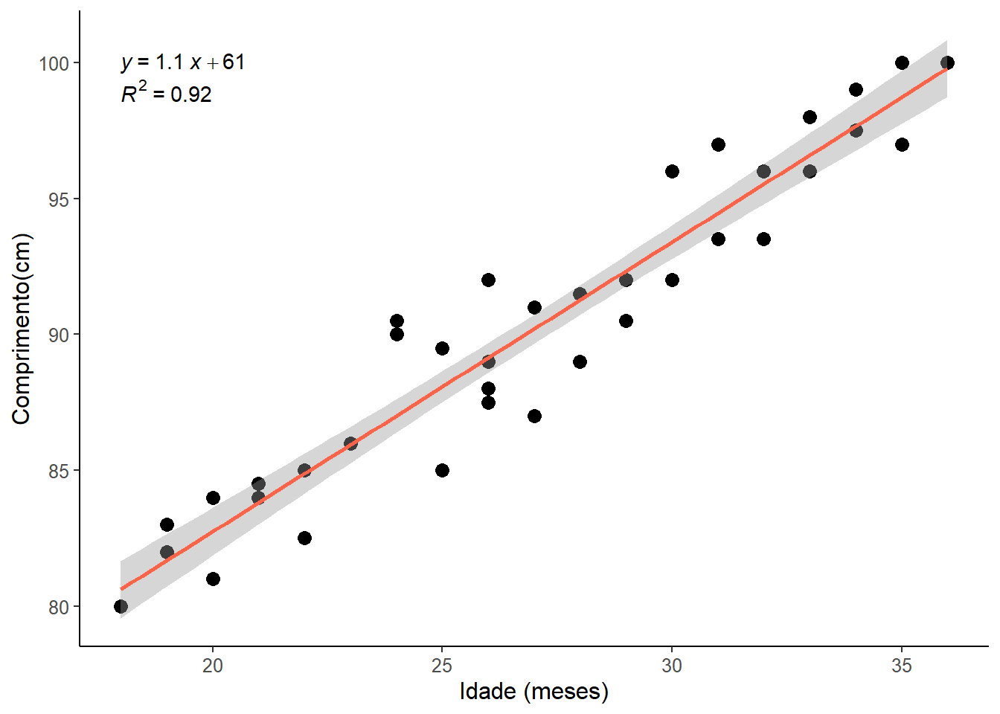

#|message: false
#|warning: false
pacman::p_load(car,
dplyr,
flextable,
ggplot2,
ggpubr,
ggsci,
knitr,
lmtest,
readxl,
rstatix)18 Regressão Linear Simples
18.1 Pacotes usados neste capítulo
18.2 Introdução
A regressão linear simples, assim como a correlação, é uma técnica usada para explorar a natureza da relação entre duas variáveis aleatórias contínuas. A principal diferença entre esses dois métodos analíticos é que a regressão permite investigar a alteração em uma variável, chamada resposta, correspondente a uma determinada alteração em outra, conhecida como variável explicativa. A regressão é um modelo matemático que permite a predição de uma variável resposta a partir de uma outra variável explicativa. A análise de correlação quantifica a força da relação entre as variáveis, tratando-as simetricamente (1).
A regressão linear simples é chamada assim, porque existe apenas uma variável independente. Se houver mais de uma variável independente, é chamada de regressão múltipla.
A representação matemática do modelo de regressão linear populacional é descrita pela equação da reta de melhor ajuste em um conjunto de pares de dados (x, y) em um gráfico de dispersão de pontos.
\[ y = \beta_{0} + \beta_{1}x \]

A inclinação da reta de regressão (\(\beta_{1}\)) determina a variação de y para cada unidade de variação de x e recebe o nome de coeficiente angular ou de regressão. O ponto de interceptação da reta com y quando x é igual a zero é \(\beta_{0}\) e é denominado de coeficiente linear (Figura 18.1). A equação da reta de regressão amostral que estima a reta de regressão populacional é igual a:
\[ \hat {y} = b_{0} + b_{1}x \]
A reta do diagrama de dispersão da Figura 18.1 é a melhor reta de ajuste aos dados.
18.3 Dados usados no exemplo
Serão usados os mesmos dados do exemplo da Correlação (Seção 17.4). A função read_excel do pacote readxl carregará o arquivo.
dados <- read_excel("dados/dadosReg.xlsx")
str(dados)tibble [40 × 5] (S3: tbl_df/tbl/data.frame)
$ id : num [1:40] 1 2 3 4 5 6 7 8 9 10 ...
$ idade : num [1:40] 18 18 19 19 20 20 21 21 22 22 ...
$ comp : num [1:40] 80 80 83 82 84 81 84.5 84 85 82.5 ...
$ irmaos: num [1:40] 0 0 2 0 0 1 1 1 0 1 ...
$ sexo : chr [1:40] "masc" "fem" "masc" "fem" ...A variável sexo, como realizado na Correlação, será transformada em fator:
dados$sexo <- as.factor(dados$sexo)Revise no capítulo de correlação a sumarização dos dados.
18.4 Resíduos
No exemplo. usado na correlação (Seção 17.4), verificou-se que existe uma correlação linear entre o a idade e o comprimento de crianças, usando uma amostra de 40 crianças entre 18 e 36 meses. A correlação de Pearson foi muito forte (r = 0,96, p < 0,00001). Esta relação linear pode ser descrita pela reta, mostrada na Figura 18.2.
ggplot2::ggplot(dados,
aes(x = idade,
y = comp,
color = "tomato")) +
geom_smooth(method = "lm",
se = FALSE,
color = "steelblue") +
geom_point(size = 3.5) +
theme_classic() +
xlab("Idade (meses") +
ylab("Comprimento (cm)") +
theme(text = element_text(size = 12)) +
theme(legend.position = "none")
Não é possível traçar uma reta que passe por todos os pontos. Esta reta ideal descreveria uma correlação perfeita, que não é o caso. Pode haver várias retas, a reta calculada pela regressão linear é aquela que promove o melhor ajuste, ou seja, é aquela cuja distância dos pontos até a reta é a menor possível.
Os resíduos são a diferença entre o valor observado e o valor previsto pelo modelo de regressão linear, construído anteriormente (mod_reg). A técnica estatística para achar a melhor reta que ajusta um conjunto de dados é denominada de método dos mínimos quadrados (Ordinary Least Square). A melhor reta ajustada é aquela em que a soma dos quadrados da distância de cada ponto (soma dos quadrados residual) em relação à reta é minimizada.
Para se obter os resíduos, como realizado na correlação, ao se avaliar os pressupostos (Seção 17.5), foi ajustado um modelo de reressão da seguinte maneira:
mod_reg <- lm(comp ~ idade, dados)E após, os seguintes comandos:
# Obter e salvar os valores preditos e residuais
dados$previsto <- predict(mod_reg)
dados$residuos <- residuals(mod_reg)Usando as variáveis criadas pode criar o gráfico da Figura 18.3 que mostra os resíduos do modelo:
ggplot2::ggplot(dados,
aes(x = idade,
y = comp,
color = "tomato")) +
geom_smooth(method = "lm",
se = FALSE,
color = "steelblue") +
geom_segment(aes(xend = idade,
yend = previsto),
linewidth = 0.8,
linetype = "dotted") +
geom_point(aes(y = previsto),
shape = 19,
size = 3,
colour = "steelblue") +
geom_point(size = 3) +
theme_classic() +
xlab("Idade (meses") +
ylab("Comprimento (cm)") +
theme(text = element_text(size = 12)) +
theme(legend.position = "none")

Uma boa maneira de testar a qualidade do ajuste do modelo é observar os resíduos (2) ou as diferenças entre os valores reais (pontos vermelhos) e os valores previstos (pontos azuis). A reta de regressão, em azul no gráfico, representa os valores previstos. A linha vertical pontilhada da linha reta até o valor dos dados observados é o resíduo.
A ideia aqui é que a soma dos resíduos seja aproximadamente zero ou o mais baixo possível. Na vida real, a maioria dos casos não seguirá uma linha perfeitamente reta, portanto, resíduos são esperados. Na saída do resumo da função lm() em (mod_reg$residuals), você pode ver estatísticas descritivas sobre os resíduos do modelo (residuals), elas mostram como os resíduos são aproximadamente zero. Pode-se observar isso, usando a função summary () e sum():
summary(mod_reg$residuals) Min. 1st Qu. Median Mean 3rd Qu. Max.
-3.20326 -1.20326 0.08994 0.00000 1.25849 3.49221 sum(mod_reg$residuals)[1] -3.538836e-15Como se observa, a soma dos residuos é praticamente iguais a zero (\(-3,54 \times 10^-15\)).
18.5 Análise dos pressupostos do modelo de regressão
A análise exploratória do conjunto de dados foi feita quando do estudo da Correlação. Assim como a correlação, a regressão linear faz várias suposições sobre os dados.
18.5.1 Gráficos diagnóstico
Os gráficos de diagnóstico da regressão (Figura 18.4) podem ser criados usando a função plot() do R base, como mostrado para a correlação. O modelo de regressão, anteriormente criado, mod_reg, entra como argumento da função. A função par(mfrow = 2, 2) foi utilizada, como de outras vezes, para colocar os gráficos em duas linhas e duas colunas:
O modelo de regressão, anteriormente criado, mod_reg, entra como argumento da função:
par(mfrow=c(2,2))
plot (mod_reg)
par(mfrow=c(1,1))
Os gráficos de diagnóstico mostram resíduos de quatro maneiras diferentes:
Resíduos vs. ajustados (Residuals vs Fitted). Usado para verificar os pressupostos de relação linear. Uma linha horizontal, sem padrões distintos é um indicativo de uma relação linear, o que é bom. Os dados do exemplo (linha vermelha) afastam-se muito pouco do zero, mas a acompanham e não se observa nenhum padrão distinto, como uma parábola por exemplo.
Q-Q plot. Usado para examinar se os resíduos são normalmente distribuídos. É bom se os pontos residuais seguirem a linha reta tracejada. É possível dizer que os resíduos seguem a linha diagonal, com pequenos desvios toleráveis.
Localização da dispersão (scale-location). Usado para verificar a homogeneidade de variância dos resíduos (homocedasticidade). Uma linha horizontal com pontos igualmente dispersos é uma boa indicação de homocedasticidade. No exemplo usado, os resíduos parecem estar dispersos e a linha vermelha não está próxima do zero, sugerindo um problema com a homocedasticidade, entretanto, não está acima de 3.
Resíduos vs. alavancagem (leverage). Usado para identificar casos influentes, ou seja, valores extremos que podem influenciar os resultados da regressão quando incluídos ou excluídos da análise. Nem todos os outliers são influentes na análise de regressão linear. Mesmo que os dados tenham valores extremos, eles podem não ser influentes para determinar uma linha de regressão. Isso significa que os resultados não seriam muito diferentes, incluindo ou não esses valores. Por outro lado, alguns casos podem ser muito influentes, mesmo que pareçam estar dentro de uma faixa razoável de valores. Outra forma de colocar, é que eles não se entendem com a tendência na maioria dos casos. Ao contrário dos outros gráficos, desta vez os padrões não são relevantes. Deve-se estar atento aos valores distantes no canto superior direito ou no canto inferior direito. Esses pontos são os lugares onde os casos podem ter influência contra uma linha de regressão. Procurar casos fora de uma linha tracejada, distância de Cook. Quando os casos estão fora da distância de Cook (o que significa que têm pontuações altas de distância de Cook), os casos são influentes para os resultados da regressão. Os resultados da regressão serão alterados se excluirmos esses casos.
A aparência dos gráficos do exemplo mostra que não há nenhum caso influente. Pouco se observa as linhas de distância de Cook (uma linha tracejada) porque todos os casos estão bem dentro das linhas de distância de Cook.
18.5.2 Avaliação da normalidade dos resíduos
Ao analisar os pressupostos da correlação, foi realizado a avaliação da normalidade nos dados brutos que indicaram não ser possível rejeitar a hipótese nula de que os dados têm distribuição normal. Agora, isto será repetido para avaliar a normalidade dos resíduos, usando o mesmo teste, teste de Shapiro-Wilk.
Ao ser criado o modelo de regressão (mod_reg), ele fornece uma série de variáveis que pode ser listada da seguinte maneira:
ls(mod_reg) [1] "assign" "call" "coefficients" "df.residual"
[5] "effects" "fitted.values" "model" "qr"
[9] "rank" "residuals" "terms" "xlevels" Usando a variável residuals, confirma-se o observado no QQPlot de que os resíduos apresentam distribuição normal, pois o valor de p > 0,05.
shapiro_test(mod_reg$residuals)# A tibble: 1 × 3
variable statistic p.value
<chr> <dbl> <dbl>
1 mod_reg$residuals 0.979 0.655A saída retorna a estatística do teste de Shapiro-Wilk com um valor P = 0,655, mostrando que os dados se ajustam à distribuição normal. Isto confirma a impressão da Figura 18.4.
18.5.3 Pesquisa de valores atípicos nos resíduos
Existe uma função pode ser usada para verificar valores atípicos nos resíduos da regressão para modelos lineares como rstandard() do pacote stats, que analisa os resíduos padronizados.
A função padroniza todos os resíduos e inclui no objeto residuos_p. Para analisá-los, faz-se um sumário, usando a função summary(). Esta função exibirá os a estatística dos 5 números mais a média para os resíduos padronizados:
residuos_p <- rstandard(mod_reg)
summary(residuos_p) Min. 1st Qu. Median Mean 3rd Qu. Max.
-1.9327846 -0.7271178 0.0548028 0.0006059 0.7779208 2.1154118 Em uma amostra normalmente distribuída, ao redor de 95% dos valores estão entre –1,96 e +1,96, 99% deve estar entre –2,58 e +2,58 e quase todos (99,9%) deve se situar entre –3,09 e +3,09.
Portanto, resíduos padronizados com um valor absoluto maior que 3 são motivo de preocupação porque em uma amostra média é improvável que aconteça um valor tão alto por acaso (3).
Se a saída da função rstandard() for comparada com o eixo y do gráfico Residuals vs Leverage, dos gráficos diagnósticos, verifica-se valores semelhantes que variam abaixo de 3 e acima de -3, indicando que não há outliers influenciando e a mediana está próxima de zero.
18.5.3.1 Homocedasticidade dos resíduos
Na Seção 17.5, foi analisada a homocedasticidade , onde se viu que o teste de Breusch-Pagan, retornou um resultado de P = 0,8231, indicando que a variância permanece praticamente constante, havendo homocedasticidade nos resíduos.
O problema mais sério associado à heterocedasticidade é o fato de que os erros padrão são tendenciosos. Como o erro padrão é fundamental para a realização de testes de significância e cálculo de intervalos de confiança, os erros padrão tendenciosos levam a conclusões incorretas sobre a significância dos coeficientes de regressão. No geral, no entanto, a violação da suposição de homocedasticidade deve ser bastante grave para apresentar um grande problema, dada a natureza robusta da regressão pelo método ordinary least-squares. No entanto, é importante que a equação final de predição seja aplicada apenas a populações com as mesmas características da amostra do estudo.
18.5.3.2 Independência dos resíduos
Os resíduos no modelo devem ser independentes, ou seja, não devem ser correlacionados entre si. Para verificar isso, pode-se executar o teste Durbin-Watson (teste dw), utilizando a função durbinWatsonTest() do pacote ´car`. O teste retorna um valor entre 0 e 4. Um valor maior que 2 indica uma correlação negativa entre resíduos adjacentes, enquanto um valor menor que 2 indica uma correlação positiva. Se o valor for dois, é provável que exista independência. Existe uma sugestão de que valores abaixo de 1 ou mais de 3 são um motivo definitivo de preocupação (3). É importante mencionar que o teste tem como pressuposto a normalidade dos dados.
durbinWatsonTest(mod_reg) lag Autocorrelation D-W Statistic p-value
1 -0.1044054 2.204843 0.624
Alternative hypothesis: rho != 0Como na saída do teste o valor p > 0,05 e a estatística DW é igual a 2,2, não se rejeita a hipótese nula de independência (rho = 0).
18.5.4 Tamanho amostral na regressão
O tamanho da amostra deve ser suficiente para suportar o modelo de regressão. É importante coletar dados suficientes para obter um modelo de regressão confiável. O tamanho da amostra necessário para suportar um modelo depende do valor do coeficiente de correlação do modelo (no caso da correlação linear simples é o r de Pearson) e do número de variáveis incluídas.
A Tabela 18.1 (4) mostra o número de participantes necessários em modelos com 1 a 4 preditores independentes. Como se observa, o requisito de tamanho da amostra aumenta com o número de variáveis preditoras.
Número de Variáveis Preditoras | ||||
|---|---|---|---|---|
r de Pearson | Uma | Duas | Três | Quatro |
0.2 | 190 | 230 | 265 | 290 |
0.3 | 80 | 100 | 115 | 125 |
0.4 | 45 | 55 | 65 | 70 |
Existem muitas regras práticas, sugerindo o tamanho da amostra. Uma delas, diz que se deve ter 10 a 15 casos por variável preditora no modelo. Entretanto, essas regras podem ser duvidosas e o melhor é calcular o tamanho amostral baseado no tamanho do efeito, usando, por exemplo o site StatToDo ou com o sofware GPower 3.1.9.7 (5).
18.5.5 Realização da regressão linear
Após analisar os pressupostos do modelo de regressão do exemplo, verificou-se que as variáveis idade e comprimento da criança têm relação linear, que os resíduos do modelo têm distribuição normal, que existe homoscedasticidade e que não há pontos influentes. E, portanto, o modelo permite que se realize uma análise de regressão linear para avaliar a relação entre as variáveis independentes e dependentes.
Para realizar uma análise de regressão linear simples e verificar os resultados, há necessidade de executar dois comandos. O primeiro, que cria o modelo linear já foi realizado na análise dos gráficos e será repetido aqui. O segundo, imprime o resumo do modelo com a função summary():
mod_reg <- lm (comp ~ idade, dados)
summary (mod_reg)
Call:
lm(formula = comp ~ idade, data = dados)
Residuals:
Min 1Q Median 3Q Max
-3.2033 -1.2033 0.0899 1.2585 3.4922
Coefficients:
Estimate Std. Error t value Pr(>|t|)
(Intercept) 61.44408 1.36466 45.02 <2e-16 ***
idade 1.06515 0.04967 21.45 <2e-16 ***
---
Signif. codes: 0 '***' 0.001 '**' 0.01 '*' 0.05 '.' 0.1 ' ' 1
Residual standard error: 1.678 on 38 degrees of freedom
Multiple R-squared: 0.9237, Adjusted R-squared: 0.9217
F-statistic: 459.9 on 1 and 38 DF, p-value: < 2.2e-16A saída da função summary() primeiro apresenta como o modelo foi obtido e, em seguida, resume os resíduos do modelo. Por último, tem-se os Coeficientes:
- As estimativas (Estimate) para os parâmetros do modelo - o valor do intercepto y (neste caso, 61,44) e o efeito estimado da idade sobre o comprimento (1,1)- significam que para cada unidade de aumento na idade se espera um aumento de 1,1 cm no comprimento.
- O erro padrão dos valores estimados (Std. Error).
- A estatística de teste (t value)
- O valor P (Pr (>| t |)), também conhecido como a probabilidade de encontrar a estatística t fornecida se a hipótese nula de nenhuma correlação for verdadeira.
- As três linhas finais são os diagnósticos do modelo - o mais importante a observar é o valor P (\(2,2\times 10^{-16}\)), que indica se o modelo se ajusta bem aos dados.
A partir desses resultados, pode-se dizer que existe uma correlação positiva significativa entre idade e comprimento (valor P < 0,001), com um aumento de 1,1 cm no comprimento para cada aumento de 1 mês no na idade , possibilitando a previsão comprimento da criança pela idade.
Estes dados são empregados para formular a equação do modelo de regressão da seguinte maneira:
\[ \hat {y} = 61,44 + 1,1 x \]
O erro padrão das estimativas são fornecidos. Esses dados permitem calcular o IC95%. Ou pode-se usar a função confint() do pacote stats, que será colocada dentro da função round() para arredondar os valores até um digito.
round (confint (mod_reg, level = 0.95), 1) 2.5 % 97.5 %
(Intercept) 58.7 64.2
idade 1.0 1.2Dessa forma, é possível prever que uma criança de 30 meses, de acordo com o modelo, terá o seguinte comprimento:
comp_30m <- 61.4 + 1.1 * 30
comp_30m[1] 94.4lim.sup <- 64.2 + 1.2*30
lim.inf <- 58.7 + 1.0*30
print (c(lim.inf, lim.sup))[1] 88.7 100.2Ou seja, espera-se que uma criança tenha, aos 30 meses de idade, um comprimento médio de 94,4 cm (IC95%: 88,7-100,2)
18.5.6 Visualização dos resultados
Será obtido um gráfico de dispersão com a reta de regressão e seu intervalo de confiança de 95% (Figura 18.5). Além disso, adicionou-se a equação do modelo de regressão (o R arredondou os valores), juntamente com o coeficiente de determinação \(R^{2}\).
ggplot2:: ggplot (dados, aes (x = idade, y = comp)) +
geom_point (size = 3) +
geom_smooth (method = "lm", se = TRUE, color = "tomato") +
stat_regline_equation (label.y = 100, aes (label = (..eq.label..))) +
stat_regline_equation (label.y = 99, aes (label = (..rr.label..))) +
theme_classic () +
xlab ("Idade (meses)") +
ylab ("Comprimento(cm)") +
theme (text = element_text (size = 12))

No gráfico, o intervalo de previsão médio de 95% em torno da reta de regressão é um intervalo de confiança de 95%, ou seja, a área na qual há 95% de certeza de que a reta de regressão verdadeira se encontra (6). Esta banda de intervalo é levemente curvada porque os erros na estimativa do intercepto e da inclinação são incluídos em adição ao erro na previsão da variável desfecho.
Se for observado, o IC95% da reta de regressão obbtida pelo ggplot2 difere um pouco do IC95% da função confint(). Isto ocorre porque:
- quando se usa
geom_smooth(method = "lm", se = TRUE), o intervalo de confiança gerado é baseado na incerteza da previsão média da regressão. Ou seja, ele mostra a faixa onde se espera que a média da variável dependente (comp) esteja para um determinado valor da variável independente (idade) e
- quando se usa a função
confint(), ela retorna o intervalo de confiança dos coeficientes do modelo de regressão. Ou seja, ela fornece a incerteza associada aos parâmetros estimados (incluindo o intercepto e os coeficientes das variáveis preditoras).
A principal diferença, portanto, é que o intervalo de confiança do ggplot2 reflete a incerteza da linha de regressão ajustada, enquanto confint() fornece a incerteza dos parâmetros do modelo.